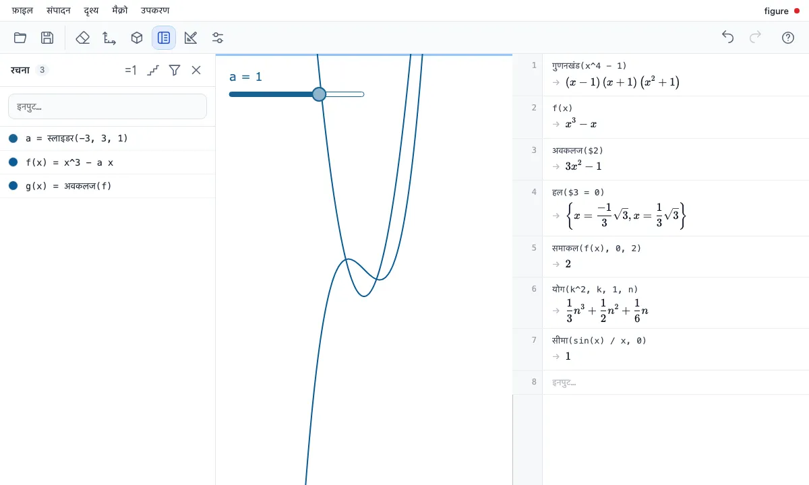

प्रतीकात्मक गणना
DocGeo, Xcas के प्रतीकात्मक गणना इंजन Giac से सटीक मान निकालता है: अवकलज, प्रतिअवकलज, गुणनखंड, समीकरण, सीमाएँ, योग, चित्र के सूत्रों में भी और CAS दृश्य में भी। यह बिंदुपथ का समीकरण भी निकालता है और ज्यामितीय गुण सिद्ध करता है।

Giac पहली बार तब लोड होता है जब किसी गणना को उसकी ज़रूरत हो, ऐसे चित्र के लिए कभी नहीं जिसे उसकी ज़रूरत नहीं। अंतिम उत्तर चित्र में सहेजे जाते हैं: वह Giac की प्रतीक्षा किए बिना खुलता और दिखता है, ऑफ़लाइन भी। यदि Giac लोड न हो सके, तो नीचे बाईं ओर «⚠ Giac» दिखता है: पहले से ज्ञात उत्तर दिखते रहते हैं, बाकी अपरिभाषित रहते हैं।
प्रतीकात्मक गणना के कमांड
ये किसी भी सूत्र में फलन की तरह प्रयोग होते हैं। जिस व्यंजक का सूत्र केवल इनमें से एक कमांड हो, वह अपने सूत्र की जगह Giac का उत्तर दिखाता है।
| कमांड | परिणाम |
|---|---|
अवकलज(f), अवकलज(e, v),
अवकलज(e, v, n)
|
अवकलज, v के सापेक्ष n-वाँ अवकलज |
समाकल(e), समाकल(e, v)
|
प्रतिअवकलज |
समाकल(x^2, 0, a),
समाकल(e, v, a, b)
|
a से b तक समाकल, सटीक मान |
गुणनखंड(e) |
परिमेय संख्याओं पर गुणनखंड:
x^2 - 2 जैसा है वैसा रहता है
|
अपरिमेयगुणनखंड(e) |
करणियों सहित गुणनखंड: (x − √2)(x + √2) |
प्रसार(e), सरलीकरण(e)
|
विस्तारित रूप, सरलीकृत रूप |
हल(x^2 = 2), हल(e, v)
|
किसी समीकरण, या शून्य के बराबर व्यंजक, के वास्तविक हलों की क्रमबद्ध सूची |
सम्मिश्रहल(e) |
सम्मिश्र हल |
योग(e, k, a, b) |
a से b तक पूर्णांक k के लिए e का योग |
सीमा(e, a),
सीमा(e, v, a)
|
a पर सीमा, जो ∞ भी हो सकता है |
टेलरबहुलक(e, a, n),
टेलरबहुलक(e, v, a, n)
|
a पर n कोटि का टेलर बहुपद |
चर v, x, y, z या t है, डिफ़ॉल्ट रूप से वह पहला जिसे व्यंजक पढ़ता
है। चित्र का फलन उसके नाम से लिखा जाता है:
g(x) = अवकलज(f)।
-
स्लाइडर Giac के लिए प्रतीक बना रहता है:
गुणनखंड(x^2 - a)x² − a दिखाता है, भले ही a का मान 4 हो। इसलिए स्लाइडर खिसकाने पर Giac से कुछ नहीं पूछा जाता: गति के दौरान उत्तर का केवल फिर से मान निकाला जाता है। -
अपवाद: टेलर बहुपद की कोटि n, और सरल रूप रहित योग की सीमाएँ
(
योग(1/k, k, 1, n)), अपने मान से पढ़ी जाती हैं: स्लाइडर हर पूर्णांक मान के लिए एक उत्तर देता है। -
समाकल(f, a, b), जहाँ f किसी फलन का नाम है, वही कमांड रहता है जो क्षेत्रफल खींचता है;समाकल(x^2, 0, 1)यासमाकल(e, v, a, b)सटीक मान निकालता है। - जब तक उत्तर नहीं आता, वस्तु अपना अंतिम मान रखती है। जिस उत्तर को DocGeo पढ़ न सके, वह वस्तु को अपरिभाषित कर देता है। Giac की प्रतीक्षा में अवकलज DocGeo स्वयं निकालता है।
CAS दृश्य
GeoGebra की तरह: क्रमांकित गणना पंक्तियाँ, चित्र के बगल में या अपने टैब में।
| क्रिया | कैसे |
|---|---|
| दृश्य जोड़ें | फ़ाइल › दृश्य › नया CAS दृश्य (प्रति चित्र एक), या फ़ाइल › नया CAS टैब («CAS1», «CAS2»…) |
| पंक्ति की गणना | अंतिम, खाली पंक्ति में लिखें, फिर Enter: उत्तर दिखता है और नई पंक्ति प्रतीक्षा करती है |
| पिछली पंक्ति वापस लाएँ | अंतिम पंक्ति में ↑ पिछली पंक्तियाँ वापस लाता है, सबसे नई पहले, और ↓ लिखे जा रहे पाठ पर लौटाता है, जैसे टर्मिनल में |
| नाम पूरा करें | दूसरे अक्षर से एक सूची कमांड, फ़ंक्शन, चित्र के ऑब्जेक्ट और दृश्य में परिभाषित नाम सुझाती है: चुनने के लिए ↑ और ↓, डालने के लिए Tab या Enter, बंद करने के लिए Esc |
| पंक्ति बदलें | उस पर क्लिक करें, फिर Enter; Esc पिछला पाठ लौटाता है, ↑ और ↓ एक पंक्ति से दूसरी पर ले जाते हैं |
| पंक्ति हटाएँ | उसे खाली करें, फिर Enter: आगे के क्रमांक खिसक जाते हैं |
| दृश्य हटाएँ | फ़ाइल › दृश्य › CAS दृश्य हटाएँ |
हर बदलाव पूर्ववत करें से पूर्ववत होता है। न समझी गई पंक्ति लाल रंग में अस्वीकार होती है।
पंक्ति लिखना
-
पंक्ति एक सूत्र है, कमांड के साथ या बिना:
sqrt(12) - sqrt(3)√3 देता है,गुणनखंड(x^4 - 1)उसका गुणनखंड। -
$2पंक्ति 2 का उत्तर है। कोई पंक्ति हटाने पर$nफिर से क्रमांकित होते हैं, और हटाई गई पंक्ति का संदर्भ उसके सूत्र से बदल दिया जाता है। -
b := 3औरh(x) := x^2 + 1आगे की पंक्तियों के लिए एक संख्या या फलन परिभाषित करते हैं। -
चित्र की वस्तुएँ अपने वर्तमान मान से पढ़ी जाती हैं: a = 2
होने पर
a^24 देता है। उन्हें खिसकाने पर उन्हें पढ़ने वाली पंक्तियों की फिर से गणना होती है। जो अक्षर वस्तु नहीं है, वह मुक्त चर है:b^2b² ही रहता है। -
piऔरlnGeoGebra की तरह लिखे जाते हैं,∞कोinfभी। कोण हमेशा रेडियन में होते हैं, अंशों वाले चित्र में भी। -
सांख्यिक(e),सांख्यिक(e, n)सन्निकट मान देते हैं (n अंकों तक);इनपुटरखें(e)e को बिना गणना के जैसा है वैसा दिखाता है। उद्धरण चिह्नों में पंक्ति,"सटीक गणना", साधारण पाठ है। -
?उस उत्तर की जगह आता है जो Giac नहीं देता या DocGeo पढ़ नहीं सकता।
माउस से इंगित करना
पहले से शुरू की गई पंक्ति लिखते समय, चित्र की किसी वस्तु पर
क्लिक करने से उसका नाम लिखा जाता है; दूसरी पंक्ति पर क्लिक करने
से उसका $n। खाली पंक्ति पर चित्र सामान्य रूप से
प्रतिक्रिया करता है।
चित्र की वस्तु परिभाषित करना
जो परिभाषा केवल चित्र की वस्तुएँ पढ़ती है, वह वस्तु भी बनाती है,
निर्माण में उसकी पंक्ति के साथ: m(x) := x^2 + a फलन
m खींचता है। जो परिभाषा मुक्त चर, $n या केवल दृश्य
में परिभाषित नाम पढ़ती है (n := b^2), वह दृश्य तक
सीमित रहती है।
प्लेयर में पंक्तियाँ ब्राउज़र की भाषा में दिखाई जाती हैं।
बीजीय वक्र
निर्माण में लिखा गया किसी भी घात का, या अबहुपदीय, समीकरण एक वक्र
है: f = x^3 + y^3 = 3x y (देकार्त का फ़ोलियम),
c = sin(x) = y। यह वहाँ खींचा जाता है जहाँ यह
खिड़की को पार करता है और खिड़की खिसकाने पर उसके साथ चलता है; इस
पर बिंदु रखे जा सकते हैं और इसे अन्य वस्तुओं से काटा जा सकता है।
| कमांड | परिणाम |
|---|---|
बिंदुपथसमीकरण(M, P) |
पूरा वक्र जिसे बिंदु M बनाता है जब वस्तु पर बिंदु P अपनी वस्तु पर चलता है |
एन्वेलप(d, P) |
पूरा वक्र जो रेखा d की स्थितियों को स्पर्श करता है जब P अपनी वस्तु पर चलता है |
GeoGebra की तरह, यह पूरा समीकरण है, अपनी सभी शाखाओं सहित, केवल
तय किया गया भाग नहीं: रेखाखंड पर चलते बिंदु का
बिंदुपथसमीकरण रेखा देता है। Giac की प्रतीक्षा में,
या ऐसे निर्माण के लिए जिसे वह अनूदित नहीं करता (मैक्रो,
कोण-समद्विभाजक, अंतर्वृत्त, चालक के रूप में स्लाइडर, त्रिविम),
यह बिन्दुपथ का तय किया गया बिंदुपथ
है।
सिद्ध करना
छह विधेय, जिनका हर तर्क किसी वस्तु का नाम है, बताते हैं कि कोई
गुण चित्र में जैसा है वैसे सत्य है या नहीं: true या
false।
| विधेय | सत्य यदि |
|---|---|
क्यासमरेखीयहै(A, B, C) |
तीनों बिंदु संरेख हैं |
समानान्तरहै(d, e),
क्यालम्बवतहै(d, e)
|
रेखाएँ, रेखाखंड या किरणें समांतर, लंब हैं |
संव्रत्तियहै(A, B, C, D) |
चारों बिंदु एक ही वृत्त (या एक ही रेखा) पर हैं |
संगामीहै(d, e, f) |
तीनों रेखाएँ एक ही बिंदु से गुज़रती हैं (या समांतर हैं) |
क्याबराबरहै(a, b) |
दो बिंदु, रेखाएँ या वृत्त संपाती हैं; दो रेखाखंडों की लंबाई समान है; दो संख्याएँ बराबर हैं |
प्रूव(p), जहाँ p इनमें से एक विधेय है, बताता है कि
वह व्यापक रूप से सत्य है या नहीं: मुक्त बिंदुओं और
वस्तुओं पर बिंदुओं की सभी स्थितियों के लिए, अपभ्रष्ट स्थितियों
को छोड़कर। G = केन्द्रक(A, B, C) के साथ, C को (AB)
पर रखने पर क्यासमरेखीयहै(A, B, G) सत्य हो जाता है,
पर प्रूव(क्यासमरेखीयहै(A, B, G)) असत्य ही रहता है।
Giac निर्माण को समीकरणों में बदलता है, GeoGebra की तरह: उत्तर
अधिक से अधिक कुछ सेकंड में आता है, और चित्र में सहेजा जाता है।
-
गणना सभी प्रतिच्छेदों को एक साथ लेती है: बिंदु A से गुज़रने
वाली रेखा और वृत्त के दूसरे प्रतिच्छेद की बात करने के लिए
उसे
अन्यप्रतिच्छेद(c, d, A)से बनाएँ। -
प्रूवऐसे निर्माण के लिए अपरिभाषित रहता है जिसे वह अनूदित नहीं करता (बिंदुपथसमीकरण वाले, या ऐसा कोण, अनुपात या त्रिज्या जो सरल भिन्न न हो, जैसे 60° का घूर्णन), और CAS दृश्य में। -
तर्क नाम होते हैं: पहले रेखाएँ बनाकर उन्हें नाम दें,
प्रूव(समानान्तरहै(d, e))।
GeoGebra चित्र
आयात पर सूत्रों के प्रतीकात्मक गणना कमांड, GeoGebra के CAS दृश्य
की पंक्तियाँ, उसके कैलकुलेटर Suite की पंक्तियाँ,
LocusEquation, Envelope,
Prove और विधेय लिए जाते हैं। जो सेल ऐसा कमांड
प्रयोग करे जो DocGeo में नहीं है, उसकी सूचना दी जाती है।